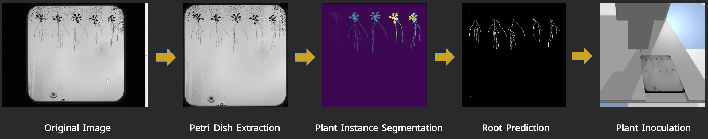

My Projects
Emotion Classification from a German Reality Show
Analyzing spoken video dialogue with NLP and Transformers
Client: Content Intelligence Agency
Learn MoreProject Highlights:
- Developed a complete NLP pipeline for emotion classification in unscripted German video content.
- ntegrated transcription, machine translation, text embedding, and emotion prediction into a unified system.
- Trained and compared classical models (Naive Bayes, Logistic Regression) and deep learning models (BiLSTM, RNN).
- Fine-tuned transformer-based models (BERT, RoBERTa) with multilingual data and class rebalancing.
Key Takeaways:
- Gained hands-on experience developing full-stack NLP pipelines for emotion recognition.
- Applied advanced transformer models in a multilingual, multimodal context.
- Demonstrated model interpretability using explainability tools like attention visualization and class attribution.
This project aimed to detect and classify emotions in spoken German dialogue from a popular reality show on YouTube. Commissioned by the Content Intelligence Agency, the goal was to develop a pipeline capable of analyzing spontaneous, emotionally nuanced speech and providing interpretable emotional labels at the sentence level.
The pipeline began with audio transcription and automatic translation from German to English where necessary. Using curated and cleaned datasets (GermanTrain, MELD, GoEmotions), emotional categories were standardized according to Ekman’s six core emotions (happiness, sadness, anger, fear, surprise, and disgust). Classical models such as Naive Bayes and Logistic Regression were initially tested using TF-IDF, POS tags, named entities, and sentiment scores.
For more robust performance, deep learning architectures like LSTM and RNN were implemented with regularization, class weighting, and early stopping to prevent overfitting. The highest accuracy was achieved using fine-tuned transformer models (BERT and RoBERTa), trained on multilingual corpora and augmented for data balance and generalization.
Finally, the model’s decision-making process was evaluated using explainable AI methods, such as attention visualization and post-hoc interpretability techniques, ensuring transparency and client trust. The completed prototype was demonstrated to stakeholders, highlighting its ability to identify emotional tones in real-world media content, with potential applications in audience analysis, media monitoring, and conversational AI systems.
AI-Driven Plant Analysis
Identifying and segmenting root structures using Computer Vision
Client: Netherlands Plant Eco-phenotyping Centre (NPEC)
Learn MoreProject Highlights:
- Developed a U-Net model with an F1 score of 0.85 for root mask prediction.
- Utilized Dijkstra's algorithm for precise measurement of primary root length.
- Compared the performance of Reinforcement Learning and PID controllers for precise inoculation using the OT-2 robot prototype.
Key Takeaways:
- Deepened expertise in computer vision for agricultural applications.
- Gained hands-on experience in robotics, automation, and precision control systems.
- Designed and developed an end-to-end AI-driven solution, from concept to prototype.
The Netherlands Plant Eco-phenotyping Centre (NPEC) is at the forefront of advancing plant research for sustainable agriculture. A key challenge in this field is automating root segmentation from images to enable accurate root detection and analysis. Additionally, robotics plays a critical role in ensuring precise plant inoculation. This project addresses these challenges by developing a robust plant segmentation approach, accurate root tip detection, and precise inoculation using the OT-2 robot prototype.
To tackle the complexities of plant phenotyping, we leveraged computer vision techniques to separate Petri dishes from background interference and perform semantic segmentation on plant elements such as seeds, shoots, and roots. After dataset refinement and preprocessing, I built a machine learning model capable of predicting plant structure masks with high accuracy. This allowed for instance segmentation, enabling precise measurements like root length and root tip location, both critical for assessing plant growth and characteristics.
On the robotics side, the project focused on automating the delivery of inoculants to the identified root tips. I developed a precision liquid handling robot controlled by a PID controller, ensuring accurate liquid dispensing. This robot was integrated with the computer vision pipeline, allowing it to precisely target and deliver liquid to designated areas on the Petri dish. This showcased the potential of combining vision-based analysis with robotic automation for precision-driven interventions in plant phenotyping experiments.
In addition to the PID controller, I also implemented a Reinforcement Learning (RL) model. By designing tailored reward functions and performing hyperparameter optimization, the RL-based system autonomously navigated to the correct root tips for liquid delivery. A comparative analysis between the PID controller and RL revealed that the PID system achieved superior accuracy (<1mm precision), while the RL model excelled in speed, albeit with slightly reduced accuracy.
Chatbot Experience Optimization in SMEs
Research on chatbot personalization, accuracy, and perceived waiting times
Client: Digiwerkplaats
Learn MoreProject Highlights:
- Investigated how chatbot usage impacts customer satisfaction and trust in Small and Medium-Sized Enterprises (SMEs).
- Focused on reducing perceived waiting times through chatbot technology to enhance customer experiences.
- Utilized a mixed-methods approach, combining quantitative surveys with qualitative interviews for comprehensive insights.
- Conducted thematic analysis and statistical evaluations to identify key factors influencing customer satisfaction.
Key Takeaways:
- Enhanced Efficiency: Chatbots significantly reduce perceived waiting times, contributing to improved operational effectiveness in SMEs.
- Customer Preferences: Users value speed, accuracy, and personalization but express dissatisfaction when tasks exceed chatbot capabilities or require escalation.
- Strategic Insights: Effective chatbot integration with human support systems enhances customer satisfaction and builds trust.
As chatbots gain popularity in the business sector, they offer significant benefits such as improved operational efficiency and enhanced customer engagement. However, they also face criticism regarding their effectiveness.
This study addresses the limitations of traditional customer service models, which often fail to meet the 24/7 support expectations of today’s consumers, especially in resource-limited SMEs. By providing immediate assistance, chatbots can significantly reduce perceived wait times, thereby enhancing customer satisfaction. This research explores the impact of perceived waiting times on customer satisfaction and trust in SMEs through chatbot technology.
Employing a mixed-methods approach, the study combines quantitative surveys measuring response perceptions with qualitative interviews that delve into customer experiences with chatbots. Random sampling ensures a diverse participant profile across sectors like retail and hospitality. The analysis utilizes descriptive statistics and t-tests for quantitative data, while thematic analysis identifies key patterns in user experiences. Ethical considerations, including informed consent and data anonymization, are strictly adhered to. Ultimately, this study aims to illuminate the effectiveness of chatbots in enhancing customer satisfaction and trust, highlighting their strategic importance for SMEs in a competitive landscape.
Traffic Accident Prevention in Breda with AI
Improve road safety using advanced data analytics and machine learning
Client: Royal Dutch Touring Club (ANWB)
Learn MoreProject Highlights:
- Developed a predictive model for road accidents in Breda using driving behavior and accident data.
- Implemented and evaluated multiple ML and DL models (Linear Regression, XGBoost, Random Forest, DNNs, RNNs).
- Deployed a user-friendly Streamlit application to assess and forecast road risk levels.
- Used real-world datasets from ANWB and SWOV, applying extensive preprocessing (normalization, outlier removal, log transformation).
Key Takeaways:
- Strengthened skills in data preprocessing, feature engineering, and model evaluation.
- Gained practical experience in full-stack ML deployment using Streamlit and PostgreSQL.
- Demonstrated the power of AI in improving urban traffic management and accident prevention.
- Highlighted the importance of explainable models with interpretable feature weights (e.g., incident severity as the strongest predictor).
In this project, I collaborated with a small team to build an end-to-end predictive analytics solution aimed at reducing traffic accidents in Breda. We worked with two key datasets: driving behavior data from ANWB and historical accident data from SWOV. The driving data included metrics such as harsh braking, sharp cornering, speeding, acceleration, and G-force, while the accident data provided contextual information on incident location, time, and severity.
Our first step involved extensive data preprocessing—cleaning the data, handling outliers using z-scores and quantile transformation, and applying logarithmic transformations after confirming a log-normal distribution. We engineered features and tested several machine learning models including Linear Regression, XGBoost, and Random Forest Regression, as well as deep learning approaches like Deep Neural Networks (DNNs) and Recurrent Neural Networks (RNNs) using TensorFlow. Model performance was evaluated using MAE, RMSE, and R² metrics, and we selected the most reliable model for deployment based on a combination of accuracy and interpretability.
We deployed the final model using Streamlit, integrating it with a PostgreSQL database for dynamic data access. The web app allows users to assess real-time and forecasted accident risks at a street level, with features for visualizing trends over the past 30 days and predicting risks for the next 7 days.
Outdoor Fire Alarm System
AI-driven fire detection in outdoor environments using Computer Vision
Client: BUas Innovation Square
Learn MoreProject Highlights:
- Developed a custom Convolutional Neural Network for binary classification to detect fire in outdoor environments, achieving an F1 score of 0.76.
- Implemented Explainable AI methods, including Grad-CAM and LIME, to enhance transparency.
- Designed the prototype for the EmberSense Solutions mobile application to mitigate outdoor fire destruction.
Key Takeaways:
- Gained practical experience in applying computer vision and deep learning for real-world environmental monitoring.
- Developed expertise in explainable AI tools to ensure responsible and interpretable model outputs.
- Learned to design a demo version of a user-centric application with continuous feedback loops for iterative design.
This project tackles the growing threat of wildfires in outdoor environments by developing an AI-driven Outdoor Fire Alarm System. While most traditional systems are focused on indoor fire detection, this approach leverages a deep learning model trained on a custom dataset (300 images/class) to recognize fire, smoke, and safe conditions in outdoor visuals.
The model achieved a 76% accuracy, with competitive performance compared to human-level accuracy (90.48%). To ensure trust and transparency, explainable AI techniques like Grad-CAM and LIME were used to highlight how the model interprets its inputs.
Beyond model performance, the system was evaluated for usability through a think-aloud study, resulting in improved navigation, clearer instructions, and more responsive feedback mechanisms. The end product is a scalable, AI-powered safety tool designed to reduce response time and improve situational awareness in fire-prone areas.
Future developments include enhancing the model architecture, expanding the dataset, and deploying the system for real-world field testing.
Predictive Player Position Modeling
Enhancing tactical decision-making with predictive analytics
Client: NAC Breda
Learn MoreProject Highlights:
- Built a predictive machine learning model to classify football players into optimal positions (forward, midfielder, defender, goalkeeper).
- Preprocessed and analyzed a comprehensive dataset containing both categorical and numerical features such as age, weight, position history, and performance metrics.
- Employed and compared various models including Logistic Regression, Regression Trees, Gradient Boosting, and Lasso Regression.
- Achieved 88.5% accuracy using a fine-tuned Random Forest Classifier with Grid Search optimization.
- Visualized data distributions, correlations, and model performance through histograms, box plots, and confusion matrices.
- Proposed a data-driven approach for scouting and acquiring players based on predicted optimal roles.
Key Takeaways:
- Demonstrated strong ability to translate a real-world sports strategy problem into a data science solution.
- Showcased the strategic importance of predictive analytics in modern football recruitment and player development.
- Gained experience in ethical considerations for data use in sports analytics, aligning with GDPR and statistical practice guidelines.
In this project, I developed a predictive machine learning model aimed at optimizing football player positioning based on comprehensive player data. The objective was to assist football clubs in identifying the most suitable field position for each player—whether forward, midfielder, defender, or goalkeeper—using data-driven insights rather than relying on subjective decision-making or trial-and-error approaches during matches.
The dataset used combined a variety of features including numerical attributes (e.g., age, height, weight, goals, penalties, and free kicks) and categorical ones (e.g., birth country, loan status, historical positions). I performed extensive data preprocessing, handling missing values, encoding categorical variables, and applying normalization techniques to ensure the data was suitable for model training.
I implemented and evaluated a range of machine learning models including Logistic Regression, Lasso Regression, Regression Trees, Gradient Boosting, and Random Forest Classifiers. After iterative tuning and performance comparison, the Random Forest Classifier, optimized via Grid Search, achieved the highest accuracy of 88.5%. Model evaluation included confusion matrices and classification reports to assess precision, recall, and F1-score, which showed particularly high performance for goalkeepers and defenders, while some overlap remained between forwards and midfielders.
In addition to the technical development, I explored ethical implications surrounding player data use in sports organizations like NAC. I analyzed the club’s responsibilities related to data privacy, fairness, and quality under GDPR, and made practical recommendations to enhance their ethical data practices. This included ensuring transparency, minimizing algorithmic bias, and maintaining data security without compromising operational focus.
The project concluded with actionable insights for player acquisition. By identifying players who may be underutilized or mispositioned, clubs can make more strategic recruitment and development decisions. This model offers a robust and scalable solution to improve player performance, reduce misplacement risk, and bring predictive analytics into football strategy in a practical, measurable way.
Data Science for Sustainable Development
Analyzing the Impact of Mobile Network Coverage on Internet Usage in Africa
Client: SDG Hub at BUas
Learn MoreProject Highlights:
- Collected and processed data on mobile network coverage and internet usage across African countries.
- Performed correlation analysis to evaluate how mobile infrastructure influences internet adoption.
- Investigated socioeconomic consequences of limited internet access in the context of digital transformation.
- Designed and developed an interactive Power BI dashboard showcasing regional connectivity gaps.
Key Takeaways:
- Strengthened expertise in data analysis and visualization using Power BI.
- Gained experience in linking data insights to Sustainable Development Goals (SDG 9 & SDG 17).
- Improved storytelling and presentation skills for communicating data-driven insights to non-technical stakeholders.
Across Africa, millions remain disconnected from the internet, limiting access to education, economic opportunities, and participation in today’s digital economy. This project aimed to uncover the link between mobile network coverage—a key component of infrastructure (SDG 9)—and internet usage, which plays a critical role in fostering global partnerships and development (SDG 17).
To address this challenge, I conducted a data-driven analysis using datasets on network coverage and internet adoption across multiple African nations. After performing correlation analysis, I built an interactive Power BI dashboard that visualizes disparities, highlights regions most affected by poor infrastructure, and simulates the impact of increased coverage on internet penetration rates.
Finally, I presented the results to peers and mentors, emphasizing the urgent need for inclusive digital policies and affordable connectivity solutions to bridge the digital divide. The insights serve as a call to action for governments and stakeholders to prioritize internet accessibility for sustainable development across the continent.